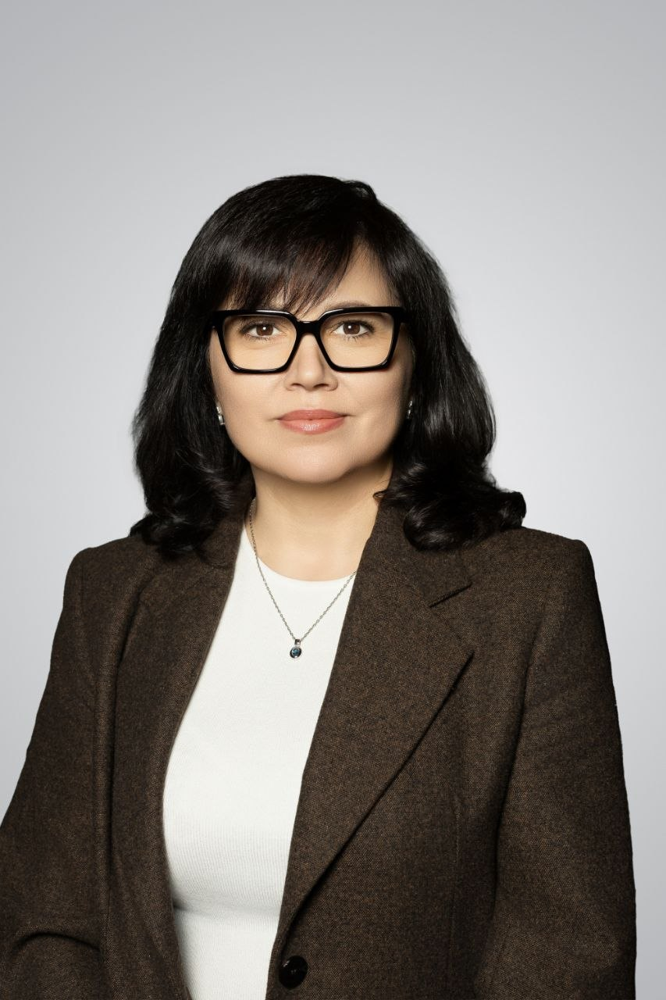
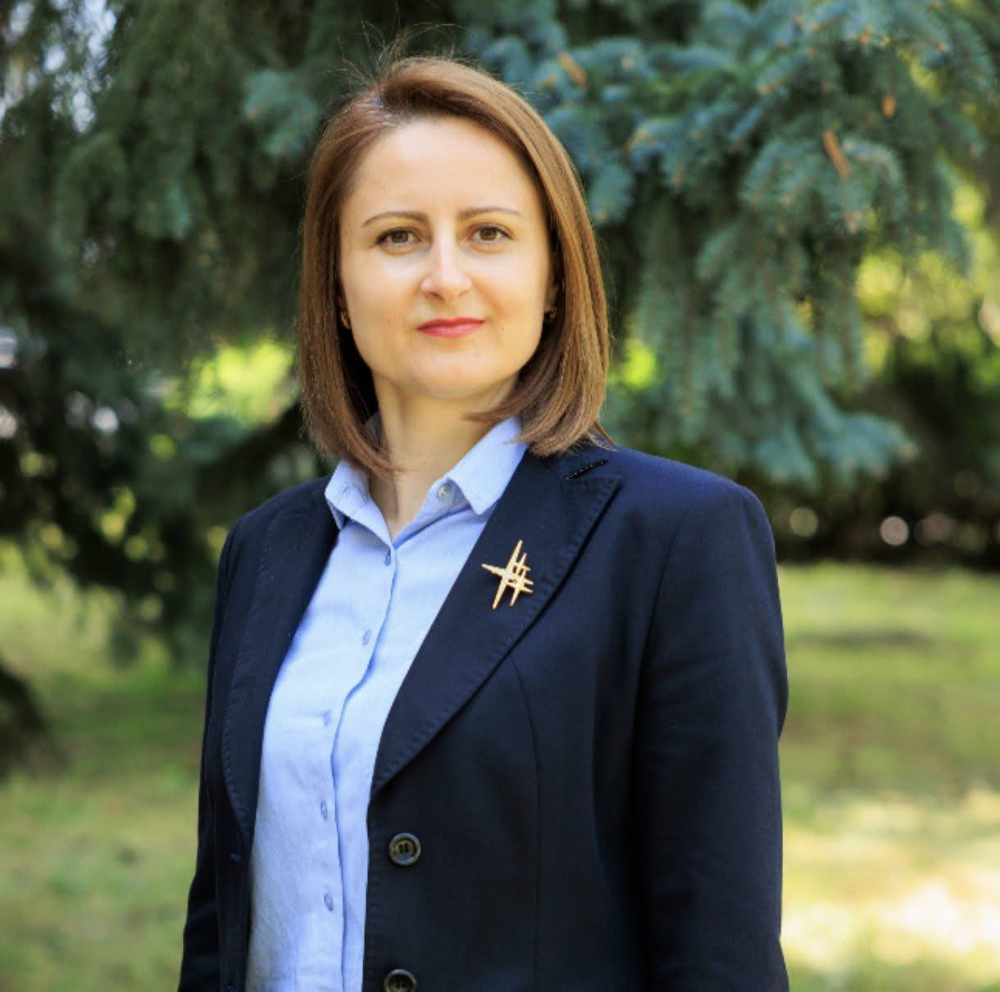
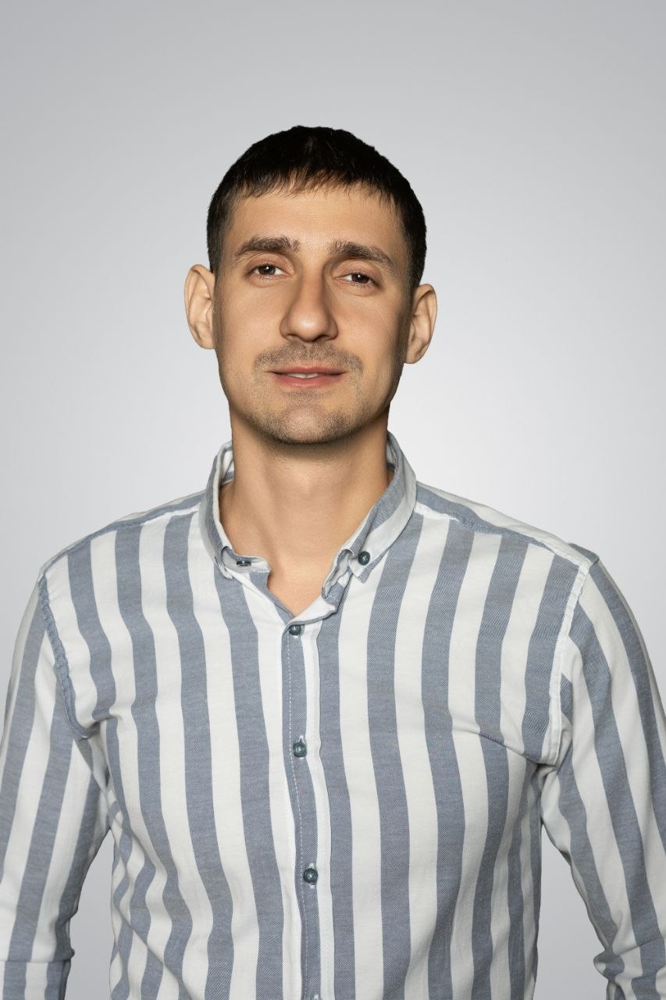

Capitolul I
"Opere alese"
Profesorii noștri
Comisiile metodice ale Liceului Teoretic “ Alexei Mateevici “, Căușeni
„Ieri elevi, astăzi colegi”
Mărturiile profesorilor care au fost elevi ai liceului.

Totul începe cu o Carte
Unele idei le purtăm ani întregi fără să le dăm un nume. Cred că „Biblioteca vie” exista în subconștientul meu încă din anii de liceu, printre manuale și problemare, printre cărțile împrumutate de la bibliotecă, printre vocile profesorilor care ne citeau, ne povesteau și ne deschideau uși spre lumi despre care nici nu știam că există.
Poate de aceea, peste ani, pe fiecare dintre profesorii mei îl asociez cu o carte.
Pe diriginta mea, doamna Voloșciuc Zinaida, o asociez cu renumitul problemar al lui Skanavi. La lecțiile de matematică, uneori nu mai vedeam nimic în jur decât o mulțime de formule care trebuiau descifrate. Astăzi, însă, când mi-o amintesc, o văd și într-o horă, într-o sârbă sau într-un vals, înconjurată de elevii pe care i-a crescut cu exigență și dragoste.
Pe domnul Opațchi Grigore îl asociez cu problemarele de fizică. Lecțiile lui îmbinau formulele cu poezia, umorul și exemplele din viața cotidiană. Ne făcea să înțelegem că fizica nu locuiește doar între coperțile unui manual, ci pretutindeni în jurul nostru.
Pe doamna Godoroja Rita o asociez cu manualul lui Homcenco, cu care reușise să ne împrietenească. Mergeam la lecțiile de chimie în halate albe, cu eprubetele în mâini, și ne simțeam adevărați savanți, participanți la un simpozion internațional.
Miss Irina știa ea ce știa… Nu în zadar aveam mereu Ghidul de conversație pe masă.
La lecțiile de geografie ale doamnei Bragari Nina, oricât de mult îmi plăceau hărțile și călătoriile imaginare prin lume, eram mereu tentată să ascund câte o carte sub atlas și să citesc. Probabil că și atunci călătoream, doar că pe alte meridiane, prin alte destine și alte lumi.
Doamna Vasluian Maria ne demonstra că o lecție poate avea și parfum: în luna ianuarie, în cabinetul de biologie înfloreau freziile. Uneori am impresia că mireasma lor mai plutește și astăzi pe coridoarele liceului.
Doamna David Serafima era pentru mine întruchiparea Cărții Românești. Mereu ne citea, ne povestea și ne prezenta ultima carte pe care o descoperise. Îmi amintesc și acum ultima poezie pe care mi-a arătat-o din Supă de pui pentru suflet, cu doar câteva zile înainte de a pleca la stele. Sunt întâlniri pe care timpul nu le poate încheia, fiindcă oamenii care ne-au dăruit cuvinte continuă să trăiască prin ele.
Domnul Eni Vasile făcea atâtea trimiteri la monografiile lui Ion Nistor, Alexandru Boldur, Nicolae Iorga, Ion Șișcanu, Vasile Pârvan și la articole din diverse reviste, încât mă întreb și astăzi când reușea să le citească și să le răsfoiască pe toate. Dincolo de date și evenimente, ne învăța să căutăm izvoare, să comparăm și să nu acceptăm istoria citită dintr-o singură carte.
Doamna Andreev Domnica nu era doar bibliotecara liceului, ci o adevărată enciclopedie. Cunoștea fiecare raft, fiecare carte și, parcă, fiecare întrebare nerostită a elevului care îi trecea pragul.
Domnul Toderașco Andrei era prezent chiar și atunci când nu se afla fizic la ore. Avea grijă să ajungă la noi teatrul radiofonic, filmele documentare și peliculele derulate la un aparat atât de arhaic, încât nici astăzi nu știu cum se numea. Prin poezie, cântec, film și teatru ne cultiva dragostea pentru limba română și pentru frumos.
Iar pe domnul Boico Ion noi îl asemănam deja cu eroii din cărți. Probabil că fiecare generație își găsește printre profesori personaje pe care niciun scriitor nu le-ar putea inventa întocmai.
Profesorii mei, fiecare o Carte.
Fiecare clasă, un capitol.
Fiecare elev, o poveste, o amintire.
Ei nu ne-au transmis doar formule, definiții, date și reguli gramaticale. Ne-au învățat să vedem dincolo de ele. Ne-au cultivat curiozitatea, gândirea critică, dorința de a cerceta, de a pune întrebări și de a căuta singuri răspunsuri. Prin spectacole, concursuri, dezbateri, întâlniri, excursii și vizite la muzee am învățat să cooperăm, să avem curaj, să ne asumăm ideile și să ne descoperim pe noi înșine.
De aici vine, probabil, pasiunea mea pentru jocurile intelectuale, dezbateri, concursuri, teatru, muzee, cărți și întâlniri cu oameni care au ceva de spus. De câte ori am posibilitatea, cumpăr, citesc, răsfoiesc, povestesc, recomand și dăruiesc o Carte.
Dar mai ales îmi place să invit la liceu Oameni cu Carte și oameni care au scris cărți. Cred în puterea întâlnirilor adevărate, în dialogul direct dintre elevi și scriitori, actori, istorici, jurnaliști, artiști sau personalități care pot deveni, pentru o oră, cărți vii. O singură poveste spusă la timpul potrivit poate deschide un drum, poate naște o întrebare sau poate schimba un destin.
Am fost și rămân deschisă spre idei noi, colaborare, conlucrare și spre tot ceea ce poate aduce un plus de sens vieții liceului. Uneori, ideile vin de la profesori, alteori de la elevi, părinți, absolvenți sau prieteni ai școlii. Important este să știm să le ascultăm, să le primim și să le oferim șansa de a prinde viață. Așa au ajuns și quizurile în liceul nostru. Ideea a venit de la Ciobanu Eduard, pe atunci elev al liceului, astăzi absolvent. A prins viață, a crescut și s-a transformat într-o adevărată carte de vizită, într-un brand al liceului. În jurul quizurilor s-au adunat elevi și profesori, s-au format echipe, s-au născut întrebări, emoții, prietenii și dorința de a cunoaște mai mult. O idee venită de la un elev este continuată astăzi de alte generații.
Există și o legătură aparte între trecutul și prezentul liceului nostru: zece dintre profesorii de astăzi suntem foști absolvenți ai acestei instituții. Am stat cândva în băncile în care stau acum elevii noștri, am pășit prin aceleași uși și am trăit emoțiile acelorași începuturi și sfârșituri de an școlar. Astăzi am devenit colegii unora dintre profesorii care ne-au format, iar această legătură ne face să simțim și mai profund că aparținem Familiei Mateevici. Suntem zece și mi-ar plăcea să fim profesori de nota 10, prin profesionalism, responsabilitate, dăruire, omenie și disponibilitatea de a învăța mereu. Pentru noi, liceul este mai mult decât locul în care muncim. Este locul în care am crescut, ne-am format, ne-am descoperit și în care am revenit pentru a dărui mai departe ceea ce am primit. Avem o responsabilitate dublă: față de elevii pe care îi educăm și față de profesorii ale căror lecții le continuăm.
Fiecare generație vine cu propriul limbaj, cu alte preocupări, visuri și moduri de a vedea lumea. Și totuși, rămân adepta aceleiași convingeri: elevii Liceului Teoretic „Alexei Mateevici” sunt cei mai ingenioși, creativi, talentați, prietenoși, omenoși, frumoși și valoroși. I-am văzut emoționând o sală întreagă, construind proiecte, susținându-și colegii, găsind soluții și transformând idei aparent imposibile în activități memorabile. I-am văzut revenind, peste ani, cu aceeași dragoste pentru liceu.
Foștilor elevi le-aș spune: oriunde v-au purtat drumurile vieții, o pagină din povestea voastră a rămas aici, iar voi rămâneți pentru totdeauna personaje ale Cărții noastre. Ușile liceului vă sunt deschise, iar fiecare revenire a voastră este o întâlnire dintre trecut și prezent.
Elevilor de astăzi le-aș spune: trăiți-vă frumos anii de liceu! Citiți, întrebați, căutați, implicați-vă, îndrăzniți să veniți cu idei și nu vă temeți să le transformați în realitate. Ceea ce astăzi vi se pare o zi obișnuită, mâine poate deveni una dintre cele mai dragi amintiri. Voi scrieți acum capitolul care, peste ani, vă va aduce din nou acasă.
Așa se scrie, de fapt, Cartea unui liceu, împreună. Niciun profesor, director sau elev nu o poate scrie singur. Doar prin susținere, colaborare, comunicare și încredere, profesori, elevi, părinți, absolvenți și parteneri putem transforma ideile în proiecte, planurile în realizări și visele în amintiri frumoase. Fiecare contribuie cu o frază, cu o pagină, uneori cu un capitol întreg.
Așa mi-am descoperit profesorii în anul 1992, când am pășit pentru prima dată în acest liceu. Astăzi, după 24 de ani de activitate în liceu, pot afirma că adevărata Putere este în Cunoaștere. Iar cea mai frumoasă răsplată este să auzi un absolvent spunând că, dacă ar putea întoarce timpul, s-ar întoarce măcar pentru încă o zi în liceu.
Viața însăși este o Carte. Iar povestea devine cu adevărat interesantă după pagina 35, la fel ca istoria liceului nostru. Cu cât întoarcem paginile, cu atât narațiunea devine mai profundă, mai surprinzătoare și uneori mai provocatoare. Din când în când revenim la început, fie pentru comparație, fie din nostalgie, și conștientizăm din nou că totul a început cu Oameni cu multă Carte, Vocație, Dedicație și Dragoste pentru ceea ce fac.
Totul începe cu o Carte. Mai întâi o colorăm. Apoi cineva ne citește povești. Învățăm singuri să citim din Abecedar, descoperim dicționare, enciclopedii, romane de dragoste, opere alese și monografii. Căutăm în cărți răspunsuri și, uneori, ne găsim chiar pe noi înșine. Iar la sfârșitul vieții ni se citește tot dintr-o Carte, din Sfânta Scriptură.
Cartea mea preferată, Quo Vadis?, mă face mereu să revin la aceeași întrebare: Încotro? Încotro merg eu? Încotro mergem noi? Încotro merge liceul nostru?
Poate că nu avem întotdeauna toate răspunsurile. Dar avem direcția: spre Cunoaștere și Bunătate, spre Credință și Speranță, spre Analiză și Încredere, spre Pace și Liniște, spre Vise și Realizări.
A fost o adevărată minune că v-am cunoscut, dragi profesori. O minune care m-a făcut să revin în liceu, să rămân aici și să încerc, împreună cu elevii, colegii, părinții și absolvenții noștri, să scriu paginile următoare.
Cartea liceului nu se închide la pagina 35. Ea rămâne deschisă și va fi continuată de generațiile care vin, așa cum se scrie, zi după zi, și istoria unei țări. Vor apărea alte personaje, alte întâmplări, alte visuri și alte titluri. Dar la începutul fiecărui capitol se vor afla mereu o Carte și un Om cu Carte.
Viorica Verebcean
Absolventă a liceului, promoția 1995
Profesoară de istorie,
director adjunct pentru educație
la Liceul Teoretic „Alexei Mateevici”, Căușeni

LT „A.Mateevici” Căușeni-
instituția care dă timpului valoare și generațiilor aripi
Fiecare sfârșit de noiembrie readuce în atenția comunității din orașul Căușeni un eveniment deosebit: aniversarea Liceului Teoretic „Alexei Mateevici”. Timpul își așterne, filă cu filă, povestea anilor, iar povestea liceului a ajuns la un frumos popas aniversar – 35 de ani de existență. O instituție de învățământ își scrie istoria prin generațiile pe care le formează, valorile pe care le cultivă și, mai ales, prin oamenii care îi dau viață.
Pentru mine, această istorie are și o semnificație aparte, deoarece am avut bucuria de a face parte din comunitatea liceului în două ipostaze: mai întâi, în calitate de elevă, în perioada 2000–2005, iar mai târziu, în calitate de profesoară, începând cu anul 2009 și până în 2024, activând în cea mai mare parte a acestei perioade ca profesoară de bază, iar în ultimii doi ani – prin cumul. Predau una dintre cele mai frumoase discipline: limba și literatura română. Îndrăznesc să afirm acest lucru nu în detrimentul altor discipline, ci pentru că limba și literatura română oferă un spațiu deosebit de valoros pentru descoperirea și cultivarea potențialului fiecărui elev. Copiii vin la școală cu un bagaj lingvistic și cultural dobândit în mediul familial, asemenea unor diamante în stare naturală. Nouă, profesorilor de limba și literatura română, ne revine menirea de a le șlefui, de a-i ajuta să-și descopere și să-și valorifice propria strălucire.
Acest proces este extraordinar de interesant, complex și divers. La lecțiile noastre nu se învață doar reguli gramaticale și definiții literare, ci, mai ales, se învață arta de a înțelege, de a-ți argumenta și susține punctul de vedere, de a fi persuasiv, creativ și ingenios. Toate acestea sunt exersate, de multe ori, prin intermediul operelor literare/artistice, care devin adevărate spații de explorare a vieții și a complexității umane. Ele sunt un fel de simulatoare pentru realitatea care îi așteaptă pe elevi după absolvire. Nu întâmplător, Mario Vargas Llosa afirma: „Trăim atâtea vieți câte cărți citim.” Prin intermediul personajelor, al experiențelor și al situațiilor în care acestea se regăsesc, descoperim valori, pe care le adoptăm, înțelegem mai bine lumea și oamenii, învățăm a înfrâna patimile distrugătoare, să discernem între bine și rău și să ne gestionăm propriile emoții și porniri.
Din această perspectivă, acord o atenție deosebită promovării lecturii în rândul elevilor mei, inclusiv prin organizarea atelierelor de lectură și discuții, activități care se numără printre preferatele lor, dar și ale mele. De obicei, le propun să citim cu toții o carte pe lună și, în acest sens, împart cu elevii responsabilitatea de a alege cărțile ce urmează să fie citite și analizate în cadrul atelierelor. Posibilitatea de a alege o carte care le stârnește interesul sau le trezește curiozitatea îi motivează să se implice mai activ în toate etapele activității. Astfel, lectura nu mai este percepută doar ca o sarcină școlară, ci devine o experiență personală, un prilej de dialog, de reflecție și de descoperire.
Evident, nu pot să nu menționez că marea provocare în acest sens o reprezintă accesul facil la informație prin intermediul internetului și, mai ales, utilizarea tot mai frecventă a inteligenței artificiale. De multe ori, aceste instrumente îi tentează pe elevi să scurteze drumul cunoașterii, limitându-se la lectura unui rezumat sau preluând o analiză ori o opinie generată de inteligența artificială. În aceste condiții, profesorului îi revine și rolul de mediator între elev, care trebuie încurajat permanent să caute, să gândească și să descopere prin propriul efort, și tehnologie, care îi pune la dispoziție soluții rapide. Încerc de fiecare dată să-i conving pe elevii mei că învățarea autentică presupune implicare personală și că nimeni nu poate învăța în locul lor. Până la urmă, cel care depune efortul este și cel care dobândește cu adevărat cunoașterea.
Tot aici, ar fi cazul să amintesc și despre o altă schimbare majoră, determinată de evoluția tehnologiilor și de digitalizare, care se resimte tot mai mult în procesul educațional, inclusiv în predarea limbii și literaturii române. Pe de o parte, tehnologiile informaționale și de comunicație au făcut lecțiile mai interactive, mai atractive și au diversificat considerabil posibilitățile de predare și învățare. Elevii au astăzi oportunitatea de a crea produse mult mai complexe și variate, în comparație cu cele realizate în urmă cu câteva decenii. Pe de altă parte, scrisul de mână pare să piardă tot mai mult teren. Elevii își fac frecvent notițele în telefoane, elaborează temele pentru acasă în format electronic, iar atenția acordată exprimării grafice și corectitudinii scrisului nu este întotdeauna cea cuvenită. Unii ajung chiar să considere aceste deprinderi mai puțin relevante, deși scrisul lizibil, corect și îngrijit rămâne o componentă importantă a formării intelectuale și a exprimării personale. Cred că adevărata provocare nu este alegerea între tradițional și modern, ci găsirea unui echilibru în care progresul tehnologic să completeze, nu să înlocuiască, deprinderile fundamentale.
Treizeci și cinci de ani reprezintă, pentru o viață de om, o perioadă demnă de luat în calcul, însă, pentru o instituție de învățământ, poate constitui doar începutul unui drum lung și frumos. Pentru Liceul Teoretic „Alexei Mateevici” din Căușeni, acești ani înseamnă deja o temelie solidă, construită prin muncă, dăruire și aspirații, o moștenire care îi oferă premisele unui viitor de succes. Sunt convinsă că liceul își va continua parcursul cu aceeași pasiune pentru educație, păstrând tradițiile valoroase și rămânând deschis noilor provocări și transformări.
Cu prilejul acestei frumoase aniversări, adresez sincere felicitări tuturor celor care contribuie la păstrarea și consolidarea identității liceului: cadrelor didactice și manageriale, elevilor și părinților, absolvenților, precum și tuturor celor care păstrează în suflet un gând bun pentru această instituție. Iar în calitate de absolventă, mă înclin cu recunoștință în fața profesorilor care mi-au călăuzit pașii, pentru profesionalismul, dăruirea și responsabilitatea cu care și-au îndeplinit nobila vocație.
La mulți ani, drag liceu! Să-ți fie drumul presărat cu generații de oameni valoroși, cu împliniri și cu bucuria de a forma, în continuare, caractere și destine!
Cucu Tatiana,
absolventă și profesoară de limba și literatura română în L.T.„ A. Mateevici” Căușeni,
directoare interimară a Agenției Teritoriale pentru Educație Căușeni

Un liceu, o poveste, un destin…
Pentru mine, Liceul „Alexei Mateevici” reprezintă mult mai mult decât o instituție de învățământ. Este locul în care m-am format ca om, în care am crescut, am descoperit valori și am pus temelia viitorului meu.
Tot aici a învățat și cea care avea să-mi devină soție, iar la o întâlnire cu absolvenții, între zidurile acestui liceu, am cerut-o în căsătorie. Astfel, liceul a devenit martorul uneia dintre cele mai frumoase și importante clipe din viața noastră – începutul familiei noastre.
De opt ani, am onoarea de a face parte din colectivul profesoral al acestei instituții, în calitate de profesor de educație fizică, contribuind, la rândul meu, la formarea noilor generații. Este o bucurie și o responsabilitate deosebită să pot oferi mai departe din ceea ce am primit cândva, în calitate de elev.
Cu o emoție aparte mă gândesc că și copiii noștri vor păși pe aceleași coridoare, continuând astfel o poveste de familie începută aici, cu ani în urmă.
Port o profundă recunoștință tuturor profesorilor care au contribuit la formarea mea, colegilor alături de care activez și acestei instituții care ocupă un loc atât de important în viața mea.
Sunt locuri pe care le purtăm în amintiri și locuri pe care le purtăm în suflet o viață întreagă. Pentru mine, Liceul „Alexei Mateevici” este locul în care trecutul, prezentul și viitorul familiei mele se întâlnesc
Fie ca această instituție să continue să formeze destine, să inspire generații și să fie locul în care se nasc, asemenea poveștii noastre, frumoase povești de viață.
Cu profund respect, aleasă prețuire și sinceră recunoștință,